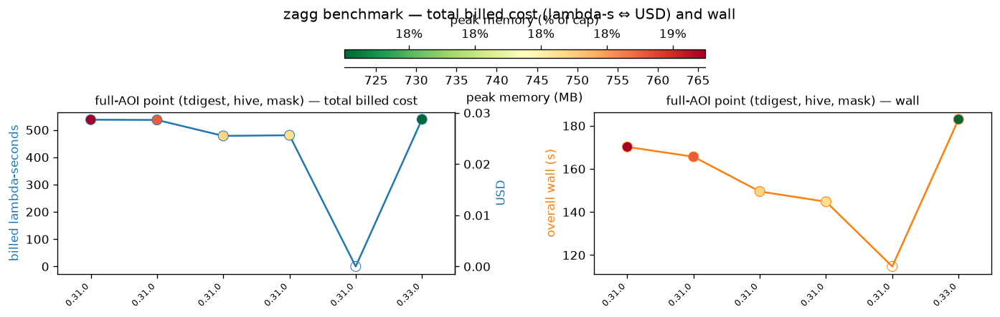
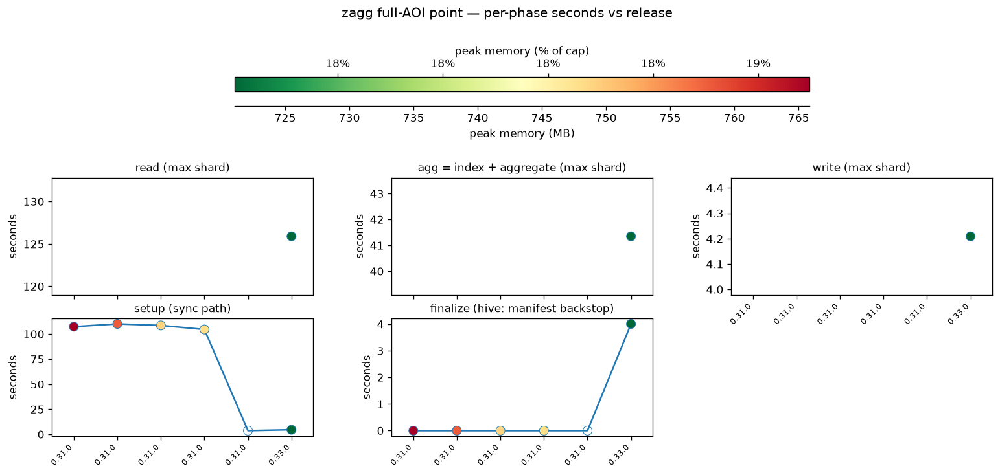
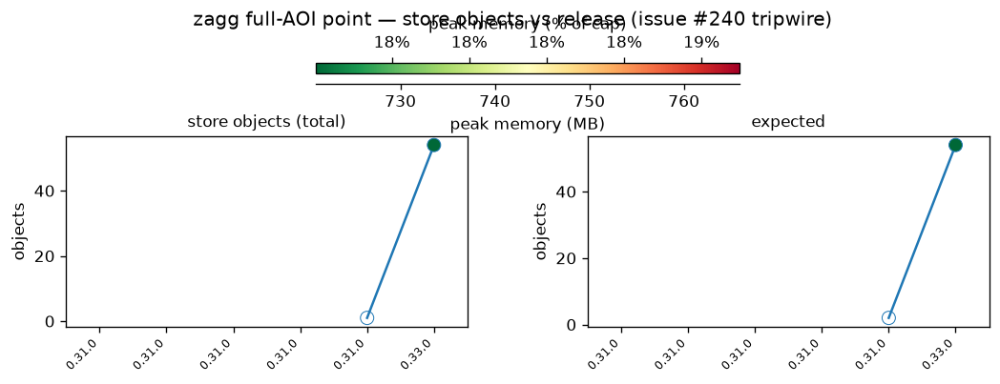
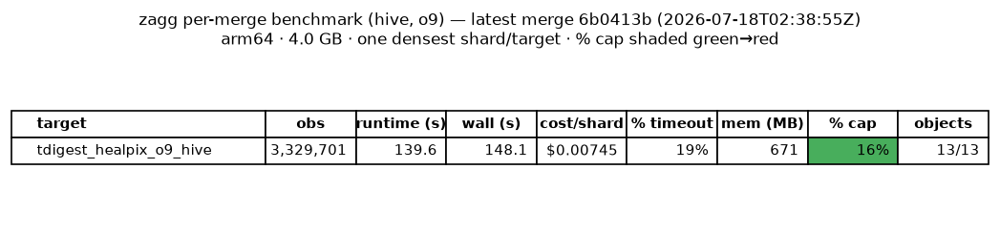
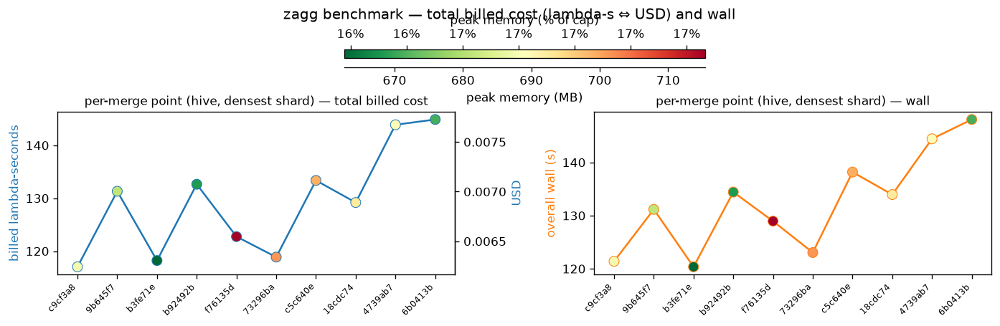
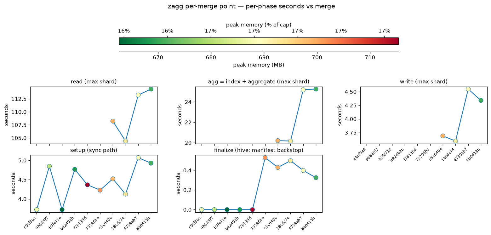
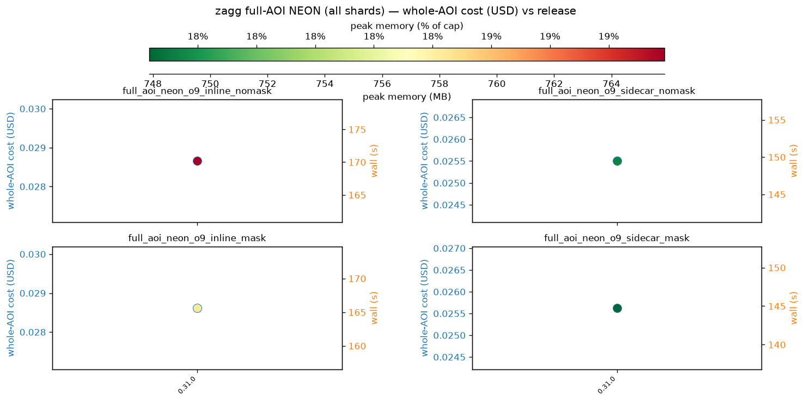
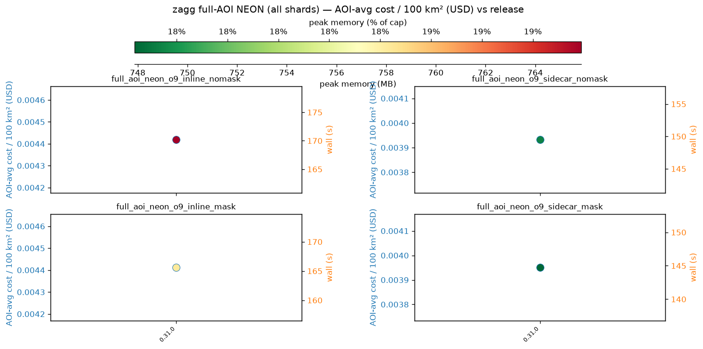

zagg Lambda benchmark
arm64 · 4 GB · o9 · hive · tdigest · NEON SERC AOP box · per release (full AOI) and per merge (single densest shard).
Per-release benchmarks (full-AOI NEON)
The whole AOP_NEON box, every shard, once per release tag — the point (tdigest, hive, AOI mask) and raster (Sentinel-2 2025) legs.
Summary — total billed cost (lambda-s ⇔ USD) and wall

Point pipeline — per-phase seconds (max shard)

Store objects (issue #240 tripwire)

Per commit to main (single densest shard)
One configuration — o9, hive, sharded, tdigest, no AOI mask — isolating code deltas from data drift (merge sha on the x-axis).
Latest merge

Machine-readable: latest.md · metrics.json
Summary — total billed cost (lambda-s ⇔ USD) and wall

Diagnostics — per-phase seconds

Archived (frozen as of issues #193 / #202 / #250)
The pre-#193 codec + historical series, the pre-#250 inline/sidecar × AOI-mask 2×2, and the per-100 km² figures — retained but no longer updated.
inline/sidecar × AOI-mask table (archived)

Sharded vs inner-chunk table (archived)

Frozen historical table (archived)

cost_per_shard (inline/sidecar × AOI-mask, archived)

cost_per_shard (sharded vs inner, archived)

cost_per_shard (frozen, archived)

cost_per_100km2 (inline/sidecar × AOI-mask, archived)

cost_per_100km2 (sharded vs inner, archived)

cost_per_100km2 (frozen, archived)

whole-AOI cost (USD) (archived)

AOI-avg cost / 100 km² (USD) (archived)
